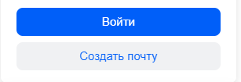
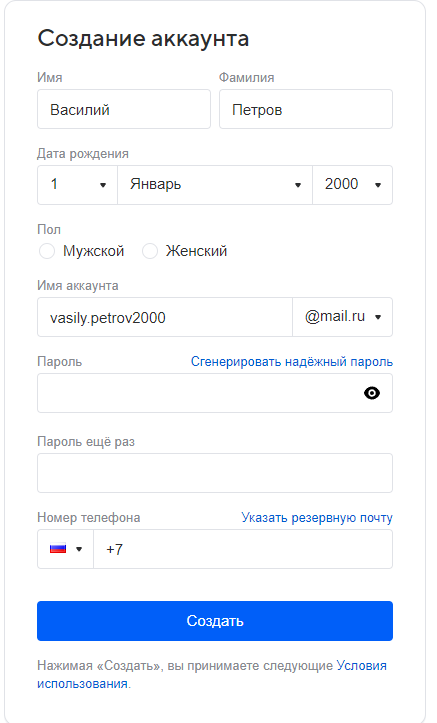
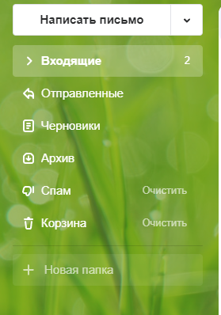
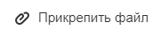

ГЛАВА 6 «Электронная почта»
Электронная почта – служба, которая позволяет обмениваться письмами и сообщениями с адресатами в различных частях страны и мира. Она похожа на обычную почтовую связь.
Вы тоже пишете письмо. Указываете адрес получателя. Можете добавить фото или документ. Только вам не надо запечатывать письмо в конверт, покупать марку и опускать в почтовый ящик.
Достаточно нажать на кнопку «Отправить». И ваше письмо практически мгновенно доходит до адресата.
Это абсолютно бесплатно. Не обязательно совершать междугородниезвонки. Можно вести ежедневную переписку с нужным вам человеком.
Как работает электронная почта
Письма приходят в почтовый ящик. Так же, как и по обычной почте. Только у электронной почты почтовый ящик – на экране компьютера.
И доставляют почту не почтальоны, а специальная программа. Ваше электронное письмо отправляется с вашего компьютера на сервер(это как почтовое отделение), где программа автоматически распознает адрес получателя и отправляет ваше письмо адресату.
Сообщение сохраняется в почтовом ящике получателя. Если адресат откроет свой почтовый ящик, то увидит ваше письмо. Чтобы начать переписку, вам необходимо зарегистрировать свой почтовый ящик и знать адрес почтового ящика вашего адресата
Электронные адреса
Адреса электронной почты отличаются от обычных. Вы не указываетеулицу или дом, город или страну, где сейчас находится человек, которому пишете.
Необходимо знать только имя почтового ящика адресата. Например, адрес электронной почты может быть таким: petrov@yandex.ru.
Любой электронный адрес состоит из четырех частей.
Имя пользователя @(собака) название почтового сервера . (точка) домен
Имя пользователя (может состоять из цифр, букв). Это может бытьваша фамилия, имя, его производные, номер телефона, любое слово. В примере: petrov.
2. Далее стоит знак @ (называется «собака»).
3. Затем идет название почтовой службы (тот самый сервер), где размещен почтовый ящик.
4. Далее обязательно стоит точка и буквы, указывающие местоположение или тематику почтовой службы (.com, .net, .org, .ru и так далее). В нашем примере: ru.
Как зарегистрировать электронный почтовый ящик
Есть много различных почтовых сервисов. Например: mail.ru, rambler.ru, gmail.com, yandex.ru. Зарегистрировать свой почтовый ящик можно бесплатно на любом из них.
Также у вас может быть несколько ящиков на одном или нескольких почтовых сервисах.
Как правило, регистрация почтового ящика может предоставлять доступ к другим возможностям сайта (облачному хранилищу, музыкальным сервисам, сервису просмотра видео, мессенджеру (возможность отправки быстрых сообщений) и даже соцсети, как в mail.ru - к социальной сети «Мой мир»).
Процесс регистрации одинаков во всех почтовых службах:
1. Зайдите на сайт. Найдите кнопку «Войти» или «Регистрация нового ящика».
2. Заполните регистрационную форму. Введите свои данные (имя и фамилию) – ваше имя будет видеть получатель письма.
3. Выберите имя своего почтового адреса. Необходимо придумать первую часть вашего почтового адреса. Вторая часть в нашем случае будет: @yandex.ru.
Логин обязательно должен состоять из латинских букв, может содержать цифры. Вы можете ввести свое имя латинскими буквами.
Как только вы введете желаемый логин, программа подскажет вам, создал ли кто-то уже такой ящик, или это название еще никем не занято. Вам предложат варианты похожих свободных имен.
4. Придумайте и введите пароль.
(Для создания ящика я посоветую платформу маил.ру https://mail.ru/ )

(ПРИМЕР)

Описание электронного почтового ящика
После регистрации вы сможете отправлять и получать почту.
(в строке сверху выберите раздел почта.)

На странице почтового ящика слева разделы – папки, где будут храниться письма.
«Входящие» – это те письма, что прислали вам.
«Отправленные» – это те, что отправили вы.
Так же есть папка «Спам», куда перенаправляются письма с ненужными рекламными предложениями.
В папке «Черновики» можно сохранять наброски писем.
В папке «Удаленные» будут храниться те письма, которые вы удалили из «Входящих»

Как написать электронное письмо
1. Нажмите кнопку «Написать».
2. Укажите адрес получателя. Необходимо узнать у получателя его адрес электронной почты и правильно вписать его в поле «Кому».
3. Впишите тему письма. Так получателю будет проще понять, кто и о чем ему пишет. Вы можете проигнорировать это поле.
4. Напишите текст. Если вы заполните все окошко для ввода текста письма – не волнуйтесь, после заполнения окно автоматически увеличится, и вы сможете продолжить.
Пока вы пишете письмо, почтовый сервис сохраняет черновик. Вы сможете писать письмо сколь угодно долго, возвращаясь к письму в папке «Черновики».
5. Нажмите кнопку «Отправить».
Как отправить в электронном письме фото, видео, музыку или документы
Электронным письмом невозможно отправить вещи, но можно выслать документы, фото или даже видео. Эти файлы можно просто прикрепить к письму.
Фотографии или видеоролики, которые вы хотите переслать, уже должны храниться у вас на компьютере. Найдите, где они размещены.
После создания письма, перед его отправкой, обратите внимание что вверху или внизу страницы есть изображение скрепки. Нажмите на него, если хотите прикрепить файлы.

Как узнать, что вам пришло письмо
Для того чтобы узнать, ответили вам или нет, зайдите в почтовый ящик.
Напротив надписи непрочитаных вы увидите сколько новых писем вам пришло.